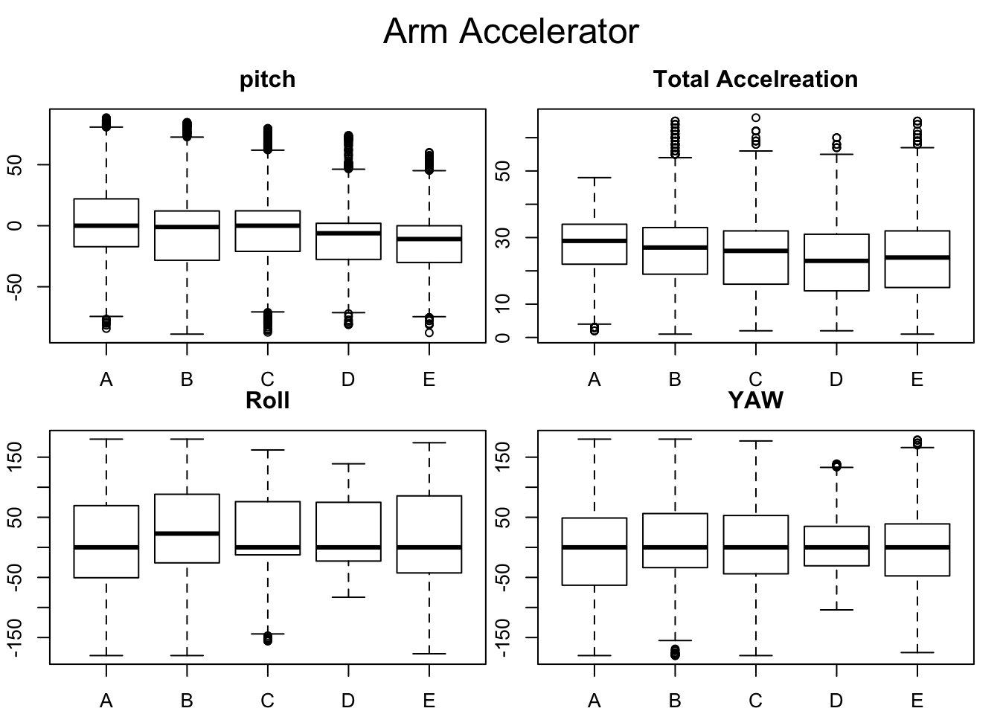
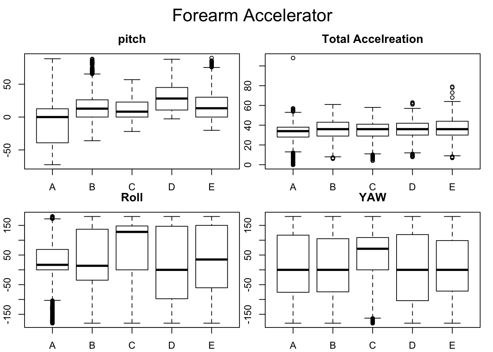
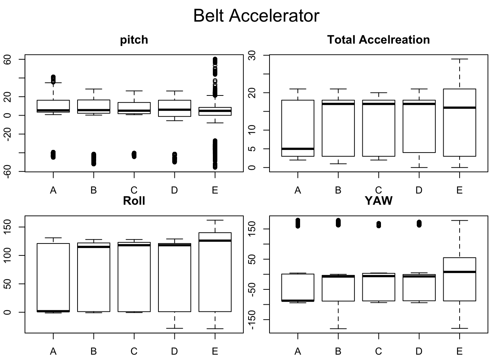

Practcal Machine Learning
Benjamin Mohn
10/29/2018
Predict Quantity of barbell lifts
In the following report I am going to predict the quantity in which one out six participants performed one set of 10 barbell lifts. Each of the participants was asked to perform the lift in 5 different ways and was wearing accelerometer on the belt, forearm and arm and as well the dumbbell got an accelerometer. The data I am going to use is from this source: http://web.archive.org/web/20161224072740/http:/groupware.les.inf.puc-rio.br/har The dataset is licensed under the Creative Commons license (CC BY-SA) The data is directly splitted into to test and training set and the variable I am going to predict os the classe variable. The classes are as followns:
- A := exactly according to specification
- B := throwing the elbows to the front
- C := lifting the dumbbell halfway
- D := lowering the dumbbell halfway
- E := throwing hips to the front
The original data and first publication is the following one, which I am citing for completness reasons: Velloso, E.; Bulling, A.; Gellersen, H.; Ugulino, W.; Fuks, H. Qualitative Activity Recognition of Weight Lifting Exercises. Proceedings of 4th International Conference in Cooperation with SIGCHI (Augmented Human ’13) . Stuttgart, Germany: ACM SIGCHI, 2013.
Loading data
download.file('https://d396qusza40orc.cloudfront.net/predmachlearn/pml-training.csv', 'train_set.csv', quiet=TRUE)
download.file('https://d396qusza40orc.cloudfront.net/predmachlearn/pml-testing.csv', 'test_set.csv', quiet=TRUE)
training <- read.csv('train_set.csv')
testing <- read.csv('test_set.csv')Exploratory Data Analysis
dim(training)## [1] 19622 160dim(testing)## [1] 20 160There are 160 Variables and 19622 observation in the training set and 20 observation in the test set.
names(training)[1:10]## [1] "X" "user_name" "raw_timestamp_part_1"
## [4] "raw_timestamp_part_2" "cvtd_timestamp" "new_window"
## [7] "num_window" "roll_belt" "pitch_belt"
## [10] "yaw_belt"The first seven columns describe the observation, so there are things like, the name, the set and timestamps. I do not assume those values to have an influence on the classe variable. Therefore I will remove them in a later step. After the first 7 features there are several measurements for each of the 4 accelerometers.
unique(sapply(training[sapply(training, function(x) sum(is.na(x))) > 0 ], function(c) sum(is.na(c))))## [1] 19216What is interesting is, that it seems that there is either no Na’s or 19216 so there seems to be some pattern. Unfortunatly in the documentation I could not find any hint what could be the reason for this. Therefore I will exclude this paramters and see if I am able to get a reasonably good model without them.
reduced_training <- training[sapply(training, function(x) sum(is.na(x))) == 0 ]Next thing I want to do is to exclude the first 7 columns.
further_reduced_training <- reduced_training[, - (1:7)]My idea is to use Cross Validation on all numeric parameters. Therefore I am now filtering for those.
final_training <- further_reduced_training[sapply(further_reduced_training, is.numeric)]
final_training$classe <- further_reduced_training$classeNow I am going to do several boxplots to get some feeling for the data. I am going to plot the combined statistics for each accelerator aggainst the classes.

  
Model fitting
In all these graphics there is not really a huge different beetween the variables visible. Therefore I am going to try now a crossvalidation on the complete data set with different models of the caret package. I will use k-Fold cross validation with k set to 3 becaue of timing issues. Therefore I will assign a new variable fold to the data which holds the information in which group a observation falls.
require(caret)## Loading required package: caret## Loading required package: lattice## Loading required package: ggplot2set.seed(29102018)
final_training$fold <- createFolds(final_training$classe, k=3, list=FALSE)Now I can fit models holding one of the groups out. Since the code is allways the same, I will just show it for one model. The seet will be always the same.
Tree - Models
set.seed(29102018)
tree1 <- train(classe~., data= final_training[(final_training$fold != 1),-54], method="rpart")Generalized Boosting Models
set.seed(29102018)
gbm1 <- train(classe~., data= final_training[(final_training$fold != 1),-54], method="gbm", verbose=FALSE)Linear discriminant Analysis
set.seed(29102018)
lda1 <- train(classe~., data= final_training[(final_training$fold != 1),-54], method="lda")Evaluation
Now that I have fitted the different models I am going to evaluate them. This I will do be using a Confusion Matrix for each of them and then taking the average of the accurcies. That model which reached the highest accuraccy I will fit once more on the entire data set and then use to do a prediction on the testing set. I will show the code for one example the rest will be similar.
predictTree1 <- predict(tree1, final_training[(final_training$fold == 1),-54])
confusionTree1 <- confusionMatrix(data = predictTree1, reference = final_training[(final_training$fold == 1),]$classe)Results
mean(c(confusionTree1$overall[1],confusionTree2$overall[1],confusionTree3$overall[1]))## [1] 0.4950052mean(c(confusionGBM1$overall[1],confusionGBM2$overall[1],confusionGBM3$overall[1]))## [1] 0.9604526mean(c(confusionLDA1$overall[1],confusionLDA2$overall[1],confusionLDA3$overall[1]))## [1] 0.699674The results show, that the normal tree algorithm performed worse amoung the three testes models. Everage accuracy is less then 50%. The genarilzed boosting models where by far the best with an average accuraccy of 96%. Therefore I will learn the final model as an GBM. So I can expect an accurracy of 96% and an out of sample error of 4%.
best_model <- train(classe~., data= final_training[,-54], method="gbm", verbose=FALSE)Predicting
Now I am going to predict the outomes for the testing set. First thing I need to do is to bring the data in the same format. In this case it means, that I have to drop the columns I also dropped in the training set.
final_testing <- testing[,names(final_training[,-c(53,54)])]The predictions according to the model I have trained are:
predict(best_model, final_testing)## [1] B A B A A E D B A A B C B A E E A B B B
## Levels: A B C D E